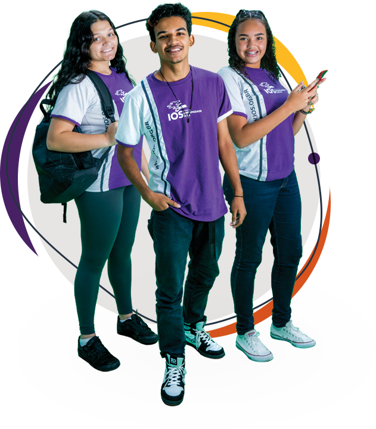

O empurrãozinho que faltava para você garantir a sua formação profissional

Nosso objetivo é o seu sucesso
Nossa Missão é cocriar oportunidades de empregabilidade e geração de renda para as juventudes, por meio da formação profissional gratuita em tecnologia.
Quem Somos
O Instituto da Oportunidade Social (IOS) é uma Entidade Beneficente de Assistência Social certificada pelo CEBAS, que desde 1998 atua promovendo a formação profissional gratuita e a empregabilidade de jovens e Pessoas com Deficiência. O IOS forma profissionais que agregam em sua bagagem, além do conhecimento técnico e capacitação teórica, competências comportamentais que o mundo do trabalho busca, como o cuidado com as relações, respeito às diferenças, trabalho em equipe, solução criativa de problemas, sempre embasados por uma mentalidade inovadora.